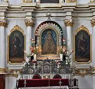
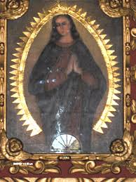

Orígenes de la Devoción
La Virgen de Guadalupe es venerada en Sucre desde tiempos coloniales, siendo un símbolo de fe y cultura en la región.
Primera procesión registrada

Capilla de la Virgen de Guadalupe

Imagen original de la Virgen
Procesión del siglo XIX